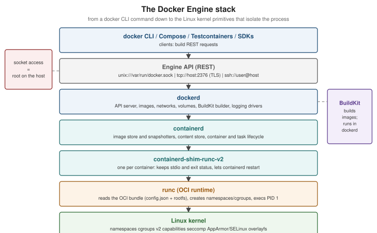

Docker Architecture and the OCI
|
This content was generated with the assistance of AI and should be verified against the official documentation before being relied on in production. |
docker run looks like one program doing one thing, but it is a chain of cooperating components, most of which are
not specific to Docker at all. Knowing that chain explains why the Docker socket is as powerful as root, why an image
built by Docker runs unchanged on Kubernetes, what "OCI-compatible" means, and why a container on a Mac is really
running inside a Linux VM. This page describes that architecture as it stands in Docker Engine 29.8.x with BuildKit
0.33.x and Docker Desktop 4.91 or later.
Client, API and daemon
Docker is a client-server system. The docker CLI never touches containers itself: it turns each command into
HTTP requests against the Docker Engine API, and the daemon, dockerd, does the work.

| Component | Responsibility |
|---|---|
|
Build Engine API requests. Anything that speaks the API is a client — Compose, the Testcontainers libraries and IDE plugins all use it directly. |
Engine API |
A versioned REST API served on a Unix socket ( |
|
The Docker daemon: serves the API, manages images, networks, volumes, the build cache and logging drivers, hosts BuildKit, and delegates container execution to containerd. |
containerd |
The industry-standard container runtime daemon (a CNCF graduated project): pulls and stores images, manages snapshots of their filesystems, and supervises container lifecycles. |
|
One small process per container. It keeps the container’s stdio and exit status, so |
|
The reference OCI runtime. It reads an OCI bundle (a |
Linux kernel |
Provides the actual isolation. There is no "container" object in the kernel — only a process with namespaces, cgroups and security settings applied. |
You can see the chain on any Linux host running Docker Engine:
docker run -d --name demo nginx:1.29
ps -ef --forest | grep -E 'containerd-shim|nginx' | grep -v grep
docker version --format '{{.Server.Version}} API {{.Server.APIVersion}} (min {{.Server.MinAPIVersion}})'
docker rm -f demoDerived from Docker architecture and
docker version.
Why the socket is root-equivalent
The API can create a container that bind-mounts the host’s root filesystem, runs privileged, joins the host’s PID
and network namespaces, or loads kernel modules. Whoever can write to /var/run/docker.sock can therefore do
anything root can do on that host. Three consequences follow:
-
Membership of the
dockergroup is equivalent tosudo(see post-install steps). -
Mounting the socket into a container (
-v /var/run/docker.sock:/var/run/docker.sock) gives that container control of the host. Testcontainers' Ryuk container does it deliberately; do it only for tools you trust. -
A remote API endpoint must never be exposed on plain TCP. Use SSH contexts or mutual TLS, as described in Protect the Docker daemon socket.
Docker Security covers rootless mode, which removes the root-equivalence by running the daemon itself as an unprivileged user.
API versioning
Every API path is prefixed with a version (/v1.56/containers/json). The CLI and daemon negotiate the highest
version both support, so an older client keeps working against a newer daemon. Engine 29.0 raised the minimum
API version the daemon accepts to v1.44 (Docker 25.0) and served v1.52; Engine 29.2 lowered the minimum back to
v1.40 (Docker 19.03) for compatibility with older clients, and Engine 29.8 serves v1.56. Old SDKs embedded in
tools are the usual source of client version 1.24 is too old errors; upgrading the tool, or setting
DOCKER_API_VERSION for a one-off, resolves them. Derived from Docker
Engine API and Engine 29 release notes.
# Talk to the API directly -- exactly what the CLI does
curl --unix-socket /var/run/docker.sock http://localhost/version
curl --unix-socket /var/run/docker.sock "http://localhost/v1.56/containers/json?all=true"Derived from Examples using the Docker Engine SDKs and Docker API.
What happens during docker run
The CLI does not pull first: it tries to create the container and pulls only when the daemon reports the image
missing (use --pull always to force a pull). Derived from
docker container run and
the Engine API reference.
BuildKit: the build engine
Since Engine 23.0, docker build is an alias for docker buildx build, and builds are executed by BuildKit, which
runs inside dockerd for the default docker driver or in a separate container for the docker-container driver.
BuildKit converts a Dockerfile (through a frontend, selected with # syntax=docker/dockerfile:1) into a graph of
low-level build steps, runs independent steps in parallel, skips stages the target does not need and caches every
step by content. It is covered in BuildKit and Buildx. The legacy
builder that preceded it is deprecated and only matters for reading pre-2023 material.
The Open Container Initiative
The Open Container Initiative (OCI), founded in 2015 under the Linux Foundation, standardises the formats Docker originally defined, so that images and runtimes are interchangeable:
| Specification | What it standardises |
|---|---|
The on-disk and registry format of an image: an image index (for multi-platform images), per-platform
manifests, an image configuration (entrypoint, environment, user, history) and layers as compressed tar
archives, all referenced by |
|
The bundle a runtime executes — a root filesystem plus |
|
The registry HTTP API for pushing and pulling blobs and manifests (derived from the Docker Registry HTTP API V2). See Registries and Docker Hub. |
"OCI-compatible" therefore means: an image any OCI registry can store, that any OCI runtime can run. An image built
with docker build, Buildpacks or Jib runs unchanged under containerd on Kubernetes, CRI-O, Podman or Docker; a
registry such as GHCR, ECR or a self-hosted CNCF Distribution instance stores all of them.
The Linux primitives underneath
The two books in the bibliography explain namespaces and cgroups well, and the concepts have not changed. What changed is how Docker drives them (through containerd and runc rather than execution drivers) and which versions are current.
Namespaces give a process its own view of a global resource:
| Namespace | Isolates |
|---|---|
|
The process tree — the container’s first process is PID 1 inside it. |
|
Mount points — the container sees its own root filesystem. |
|
Network interfaces, routing tables, iptables/nftables rules and ports. |
|
Hostname and domain name. |
|
System V IPC and POSIX message queues. |
|
User and group IDs — root inside can map to an unprivileged user outside (user-namespace remapping and rootless mode). |
|
The container’s view of the cgroup hierarchy. |
Control groups (cgroups) limit and account for CPU, memory, I/O and the number of processes. Modern distributions use the unified cgroup v2 hierarchy; cgroup v1 is deprecated as of Engine 29 (supported until at least May 2029). See Resources, Logging and Monitoring.
Capabilities split root’s power into about forty privileges; Docker starts containers with a reduced default set
(no CAP_SYS_ADMIN, no CAP_NET_ADMIN, and so on). Seccomp filters the system calls a container may make with a
default profile that blocks around 44 of them. AppArmor or SELinux profiles add mandatory access control. All
of these are covered in Docker Security. Derived from
Docker Engine security.
Storage: graph drivers and the containerd image store
Images are stacks of read-only layers, and a container adds a writable layer on top (copy-on-write). Something has to assemble those layers into one filesystem:
-
Storage drivers (the "graph drivers" of
dockerd):overlay2is the default and recommended one on every current distribution;btrfs,zfs,vfsandfuse-overlayfsexist for special cases.aufsanddevicemapperwere the defaults in the 2015 books and have been removed. -
The containerd image store: images are stored by containerd itself and assembled by containerd snapshotters (
overlayfsby default). It is the default for fresh installations of Engine 29 (not for upgraded ones, and not whenuserns-remapis enabled), and on Docker Desktop. It stores multi-platform images and attestations natively, which the classic store cannot.
docker info --format '{{.Driver}}' # "overlay2" (classic store) or "overlayfs" (containerd snapshotter)
docker info --format '{{json .DriverStatus}}' # includes "driver-type io.containerd.snapshotter.v1" for the containerd storeDerived from containerd image store with Docker Engine and
Storage drivers. Switching stores hides the images and containers
of the other store (they are not migrated); the same page shows the daemon.json feature flag
("features": { "containerd-snapshotter": true }).
Docker Desktop: a Linux VM in disguise
Linux containers need a Linux kernel. On macOS and Windows, Docker Desktop runs a small, Docker-managed Linux VM
that hosts dockerd and containerd; the docker CLI on the host talks to it through a forwarded socket. Which
virtual machine manager runs that VM is a setting:
-
macOS: Docker VMM (Docker’s own container-optimised VMM on Apple silicon), the Apple Virtualization framework, or QEMU (legacy).
-
Windows: the WSL 2 backend (the default for most users), Hyper-V, or Docker VMM.
The VM explains several everyday effects:
-
File sharing: bind-mounting a host directory crosses the VM boundary (virtiofs, gRPC FUSE or the WSL 2 filesystem). Large source trees can be slow; Docker Desktop’s synchronized file shares and keeping sources inside the WSL 2 filesystem are the documented fixes.
-
Networking: containers live on the VM’s network. Published ports are forwarded to the host’s
localhost, andhost.docker.internalresolves to the host from inside a container (see Networking). -
Resources: container limits are carved out of the VM’s CPU and memory allocation, set under Settings > Resources.
-
Architecture: on Apple silicon the VM is
arm64;linux/amd64images run under emulation, which is slower (see BuildKit and Buildx for multi-platform images).
Derived from Virtual Machine Manager for Docker Desktop and Docker Desktop WSL 2 backend. The 2015 books' Boot2Docker and Docker Machine, which played the same role with VirtualBox, are historical.
Alternative runtimes
runc is the default, but dockerd can hand containers to any containerd shim. Runtimes that add a stronger
isolation boundary are the usual reason:
# Kata Containers (lightweight VM per container), once its shim is installed on the host
docker run --rm --runtime io.containerd.kata.v2 hello-world
# gVisor (user-space kernel), registered in /etc/docker/daemon.json as "gvisor"
docker run --rm --runtime gvisor hello-worldDerived from Alternative container runtimes, which
also documents youki and Wasmtime and the daemon.json runtimes stanza.
What the 2015 books described differently
| 2015 concept | Replacement |
|---|---|
Execution drivers ( |
containerd plus an OCI runtime (runc by default) behind a shim |
AUFS and devicemapper storage backends |
|
Boot2Docker / Docker Machine VMs on macOS and Windows |
Docker Desktop’s managed VM (Docker VMM, Apple Virtualization framework, WSL 2 or Hyper-V) |
Docker-specific image and registry formats |
The OCI image, runtime and distribution specifications |